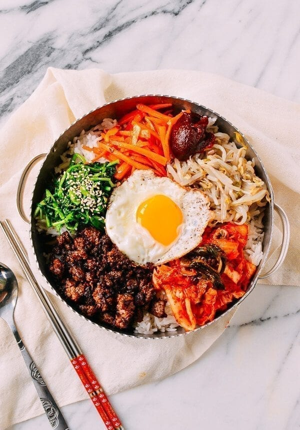

Bibimbap

Ingredients
Rice:
Meat:
- 8 ounces thinly sliced tender beef (rib eye, sirloin, etc. or ground beef)
- 1.5 tablespoons soy sauce
- 2 teaspoons sugar
- 2 teaspoons sesame oil
- 2 teaspoons rice wine
- 1 teaspoon minced garlic (This recipes needs 2.5 teaspoons minced garlic in total. Mince it all at once for efficiency.)
- 1 tablespoon chopped scallion (This recipe needs 4 tablespoons, 1 or 2 scallions depending on the size, in total. Chop them all once for efficiency.)
- pepper to taste
Vegetables and eggs:
- 8 ounces mung bean sprouts (sukju, 숙주) or soybean sprouts (kongnamul, 콩나물) - see more vegetable options below.
- 1 bunch spinach, about 8 ounces
- 2 small cucumbers, about 5 ounces
- 4 ounces mushrooms (shiitake, white, cremini, etc.)
- 2 medium carrots, about 5 ounces
- 1.5 teaspoons minced garlic, divided
- 3 3 tablespoons chopped scallion, divided
- sesame oil
- sesame seeds
- salt
- 4 eggs - optional
- cooking oil
More vegetable options:
- 8 ounces Kongnamul (soybean sprouts)
- 10 ounces mu (Korean radish)
Bibimbap sauce:
- 4 tablespoons gochujang, 고추장
- 2 teaspoons sugar - adjust to taste, 1-3 teaspoons
- 1 tablespoon sesame oil
- 1 tablespoon water
Instructions
Rice:
- Cook the rice, without soaking and using a little less water than the amount you normally use. The rice for bibimbap should be a little drier than usual for best results.
Meat:
- Beef: Cut into thin 2-inch long strips. Mix in 1.5 tablespoons of soy sauce, 2 teaspoons of sugar, 2 teaspoons of sesame oil, 2 teaspoons of rice wine, 1 tablespoon of chopped scallion, 1 teaspoon minced garlic, 1/2 sesame seeds and a pinch of pepper. Marinate for 20 minutes. Sauté in a skillet for 2-3 minutes over high heat.
Vegetables and eggs:
- Bean sprouts: Bring 2 cups of water to a boil. Add the bean sprouts and briefly blanch, about 1 minute, flipping over once. Drain quickly and shock in cold water to stop cooking. Drain again. Toss with 1/2 teaspoon of minced garlic, 1 teaspoon of sesame oil, 1/2 teaspoon of sesame seeds, and salt (about 1/2 teaspoon).
- Spinach: Blanch the spinach in salted boiling water only until wilted, about 40 seconds. Drain quickly and shock in cold water. Squeeze out water. Cut into 3-inch lengths. Toss with 1 tablespoon of chopped scallion, 1/2 teaspoon minced garlic, 1 teaspoon of sesame oil, 1/2 teaspoon of sesame seeds and salt (about 1/2 teaspoon).
- Cucumbers: Cut the cucumbers in half lengthwise and then thinly slice crosswise. Generously sprinkle salt (about 1/2 teaspoon) over sliced cucumbers and set aside for 10 - 15 minutes. Squeeze out excess liquid. Toss with 1 tablespoon of chopped scallion, 1/2 teaspoon minced garlic, 1 teaspoon sesame oil and 1/2 teaspoon of sesame seeds.
- Mushrooms and carrots: Thinly slice the mushrooms and carrots. Sauté each vegetable in a lightly oiled skillet for 1 - 2 minutes over medium-high heat, sprinkling with salt (about 1/4 teaspoon).
More vegetable options:
- Kongnamul (Soybean sprouts): Bring 2 cups of water to a boil. Add the soy beansprouts and boil for 2-3 minutes. Drain quickly and shock in cold water to stop cooking. Drain again. Toss with 1/2 teaspoon of minced garlic, 1 teaspoon of sesame oil, 1/2 teaspoon of sesame seeds, and salt (about 1/2 teaspoon) to taste.
- Musaengchae (spicy radish salad): Cut 10 ounces of Korean radish (mu) into matchsticks. Add 2 tablespoons of chopped scallion, 1 tablespoon of gochugaru, 1 teaspoon minced garlic, 1/2 teaspoon salt (or more to taste), 1 teaspoon sugar, and 1 teaspoon sesame seeds. Mix everything well.
Optional Eggs:
- Fry the eggs sunny side up or to your preference.
Bibimbap sauce:
- Combine all of the sauce ingredients in a small bowl and mix thoroughly.
Assembling:
- Place a serving of rice in a big bowl. Nicely arrange a small amount of each prepared vegetable and beef over the rice. Drizzle a little sesame oil over. Top with an optional fried egg and serve with the sauce.
- For dolsot bibimbap: Lightly oil a stone or earthenware bowl with a teaspoon of sesame oil over medium heat. Add a serving of cooked rice and arrange the toppings on top. Cook for several minutes until the rice sizzles.